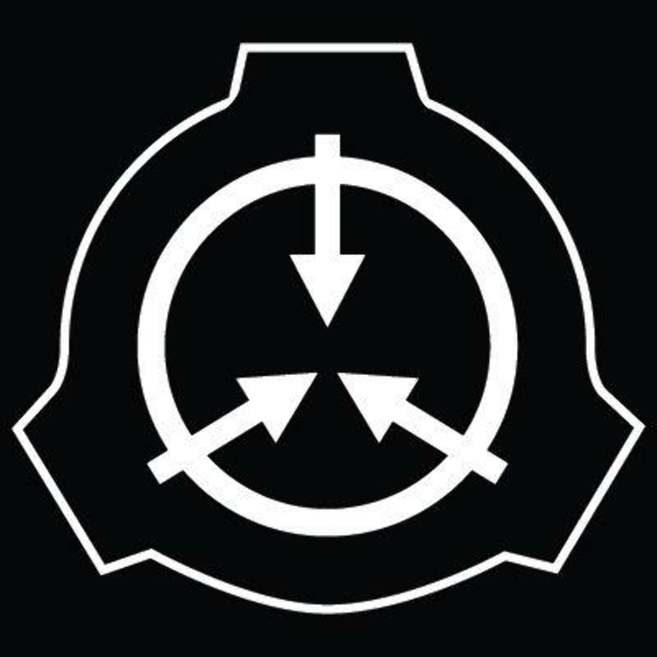

SCP
APOLLYON
Congratulations.
If you are reading this, you have been selected for hire.
Who we are.
We are the SCP Foundation.
Operating clandestine and worldwide, the Foundation acts beyond
conventional jurisdiction, with the task of containing anomalous
objects, entities, and phenomena.
We maintain an extensive database of information regarding anomalies requiring Special Containment Procedures, commonly referred to as "SCPs"; all of which undermine the natural laws that the people of the world implicitly trust in.
We operate to maintain normalcy, so that the worldwide civilian population can live and go on with their daily lives without fear, mistrust, or doubt in their personal beliefs, and to maintain human independence from extraterrestrial, extradimensional, and other extranormal influence.
Our mission is threefold:
Secure — secure anomalies to prevent them from falling into the hands of civilian or rival agencies through extensive observation and surveillance, acting to intercept anomalies at the earliest opportunity.
Contain — contain anomalies to prevent spread of their influence or effects; by either relocating, concealing, or dismantling them, or by suppressing public dissemination of knowledge thereof.
Protect — protects humanity as well as the anomalies themselves until such time that they are either fully understood or new theories of science can be devised based on their properties and behavior.
What is SCP Apollyon?
You.
You are the foundation's newest secret. Unfortunately, on rather short notice, the Chaos Insurgency has occupied one of our containment sites. More concerningly, they have began utilizing some of our SCP's against us.
You are tasked to enter the site, eliminate the Chaos Insurgency presence, and locate and recover as many as possible.
You will be grouped with members of many other MTF Groups.
You may not survive.
However, the site and its personnel are relying on you.
For the Sake of Humanity, Will you accept this position?
accept
Decline